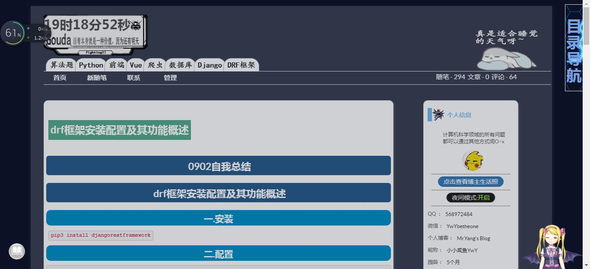
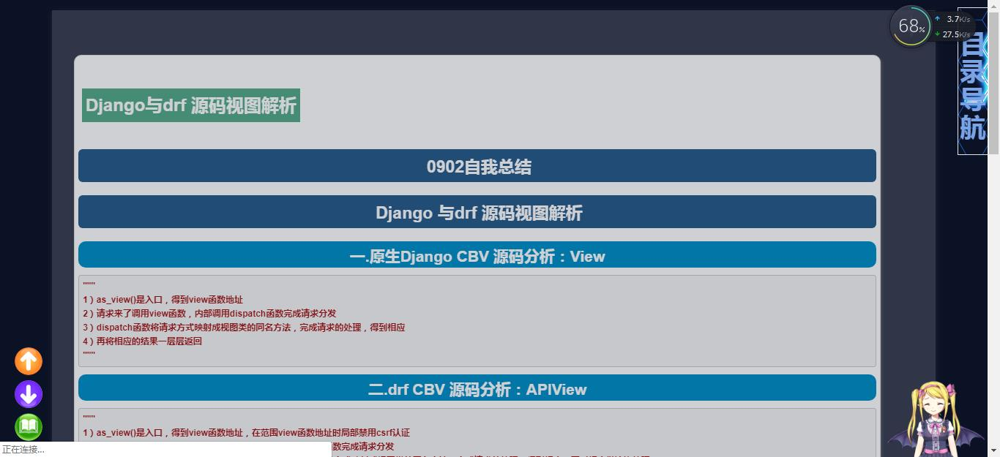

为了自己能更加好的查看自己的总结以及让关注我的小可爱们能更加好的学习我弄了阅读模式
放在页脚即可
<!--阅读模式-->
<style>
.read_book {
background: url(https://images.cnblogs.com/cnblogs_com/pythonywy/1516412/o_greedread.png)
}
.not_read_book {
background: url(https://images.cnblogs.com/cnblogs_com/pythonywy/1516412/o_notread.png)
}
.read_book_button {
height: 38px;
width: 38px;
border-radius: 50%;
border: none;
position: fixed;
bottom: 22px;
left: 20px;
outline: none;
}
.read_goend_button {
background: url(https://images.cnblogs.com/cnblogs_com/pythonywy/1516412/o_goend2.png);
height: 38px;
width: 38px;
border-radius: 50%;
border: none;
position: fixed;
bottom: 67px;
left: 20px;
outline: none;
}
.read_gotop_button {
background: url(https://images.cnblogs.com/cnblogs_com/pythonywy/1516412/o_gotop.png);
height: 38px;
width: 38px;
border-radius: 50%;
border: none;
position: fixed;
bottom: 112px;
left: 20px;
outline: none;
}
.read_auto_button {
height: 38px;
width: 38px;
border-radius: 50%;
border: none;
position: fixed;
bottom: 156px;
left: 20px;
outline: none;
}
.start_auto{
background: url(https://images.cnblogs.com/cnblogs_com/pythonywy/1516412/o_auto_start.png);
}
.stop_auto{
background: url(https://images.cnblogs.com/cnblogs_com/pythonywy/1516412/o_auto_stop.png);
}
</style>
<button class="read_auto_button start_auto" style="display: none"></button>
<button class="read_gotop_button" style="display: none"></button>
<button class="read_goend_button" style="display: none"></button>
<button class="read_book_button not_read_book" style="display: none"></button>
<script>
//自动滚动事件
var read_auto_button = document.querySelector('.read_auto_button');
read_auto_button.onclick = function () {
var start_or_stop = this.classList[1];
if (start_or_stop == 'start_auto') {
this.className = 'read_auto_button stop_auto';
var gotoend = function () {
var scroll_y = window.scrollY;
scrollTo(scroll_y, scroll_y + 2);
}
Window.start = setInterval(gotoend, 100)
} else {
this.className = 'read_auto_button start_auto';
clearInterval(Window.start)
}
};
//判断是否出现正文出现正文的时候出现read按钮
var topics = document.querySelector('#topics');
var read_book_button = document.querySelector('.read_book_button');
if (topics) {
read_book_button.style.display = 'block'
}
//向上按钮点击事件
var read_gotop_button = document.querySelector('.read_gotop_button');
read_gotop_button.onclick = function () {
window.scrollTo(0, 0);
};
//向下按钮点击事件
var read_goend_button = document.querySelector('.read_goend_button');
read_goend_button.onclick = function () {
window.scrollTo(0, 9999);
};
read_book_button.onclick = function () {
//点击事情跟换类名
var class_name = this.classList[1];
class_name == 'read_book' ? this.className = 'read_book_button not_read_book' : this.className = 'read_book_button read_book'
//更换样式
//头
var head = document.querySelector('#header');
//右侧
var sideBar = document.querySelector('#sideBar');
//评价栏
var comment_form = document.querySelector('#comment_form');
//正文无关的内容
var blog_post_info_block = document.querySelector('#blog_post_info_block');
var postDesc = document.querySelector('.postDesc');
var footer = document.querySelector('#footer');
var blog_comments_placeholder = document.querySelector('#blog-comments-placeholder');
var waifu = document.querySelector('#waifu');
//自动滚动按钮
var read_auto_button = document.querySelector('.read_auto_button');
//向上的按钮
var read_gotop_button = document.querySelector('.read_gotop_button');
//向下的按钮
var read_goend_button = document.querySelector('.read_goend_button');
//文章
var mainContent = document.querySelector('#mainContent');
if (class_name == 'read_book') {
head.style.display = 'block';
sideBar.style.display = 'block';
comment_form.style.display = 'block';
blog_post_info_block.style.display = 'block';
postDesc.style.display = 'block';
footer.style.display = 'block';
blog_comments_placeholder.style.display = 'block';
waifu.style.display = 'block';
read_gotop_button.style.display = 'none';
read_goend_button.style.display = 'none';
read_auto_button.style.display = 'none';
mainContent.style.width = '94%'
} else {
head.style.display = 'none';
sideBar.style.display = 'none';
comment_form.style.display = 'none';
blog_post_info_block.style.display = 'none';
postDesc.style.display = 'none';
footer.style.display = 'none';
blog_comments_placeholder.style.display = 'none';
waifu.style.display = 'none';
read_gotop_button.style.display = 'block';
read_goend_button.style.display = 'block';
read_auto_button.style.display = 'block';
mainContent.style.width = '124%'
}
}
</script>写在全局css样式中
@keyframes pulse {
25% {
transform: scale(1.05);
}
75% {
transform: scale(.99);
}
}
.read_goend_button:hover,.read_gotop_button:hover,.read_book_button:hover {
animation-name: pulse;
animation-duration: 1s;
animation-timing-function: linear;
animation-iteration-count: infinite;
box-shadow: none;
}

2019.10.02加入了自动阅读模式